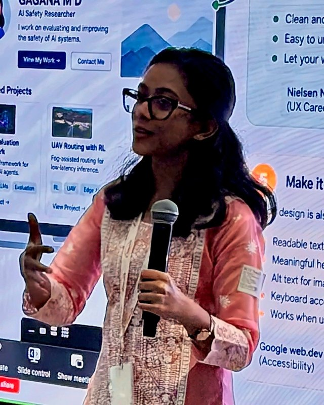

Empirical AI safety
I study how to monitor AI agents when we can't see everything they do.
Hi, I'm Gagana. I work on empirical AI safety: AI control and monitoring, how agents behave around each other, and how we evaluate agents and the world models they're tested in. I mostly run small, controlled experiments, often in teams, and I like following a result up until I know where it holds.
I'm a Research Fellow at Sentient Futures, working on behavioural evaluation and post-AGI governance. From May to October I was also a PRISM AI Safety Research Fellow; the rest is on my About page.
I'm looking for a funded research fellowship or research engineering role.

Recently
- Our world-models paper is on arXiv. We'll present it as a poster at the NeurIPS 2026 NEmo workshop in December.
- I re-ran Detection Is Not Containment at a larger scale. The original result mostly didn't hold, and a preregistered follow-up showed what helped. What I found
- Two team reports from Apart Research's AI Collusion Sprint: on swapped-in partners, and on what a pricing model's high prices do and don't show.
- Joined Sentient Futures as a Research Fellow.
Questions I'm working on
AI control · monitoring
Can a monitor's alarm arrive early enough to act on?
I built the experiment in a small agent environment, then scaled it up on my own. At scale, the monitor almost never flagged problems in time. Case study
Multi-agent behaviour
What can we tell about colluding agents from their behaviour?
I led a study in which a monitor secretly took over a colluding agent's seat, and implemented the interpretability and steering experiments on a pricing model. Details
World-model evaluation
Can language models write environments that planners can trust?
On a PRISM team project, I implemented the evaluation pipeline, analysis library and tests. Most generated models ran; most got the structure wrong. Details
Agent evaluations
What makes an agent evaluation worth trusting?
I built an evaluation harness that records where every result came from, and tested when multi-step agent orchestration is worth its cost. Details
Papers and reports
Grouped by how they were reviewed. More on the Research page.
Peer-reviewed
- Hyperspectral BiorNet: A Complete Wavelet Framework for Unmixing. IEEE India Geoscience and Remote Sensing Symposium (InGARSS), 2025. DOI
Workshop paper (non-archival)
- Evaluating LLM-Generated World Models for Neuro-Symbolic Reasoning. NeurIPS 2026 Workshop on Neuro-Symbolic Embodied Intelligence (NEmo), poster. arXiv Workshop
Reports (not peer-reviewed)
- Detection Is Not Containment: Timely Monitoring Determines Whether AI Agent Failures Can Be Prevented. Apart Research sprint report, Sep 2026. Report Case study
- Noticing the Move, Missing the Player: LLM Agents Detect Behavioral Shifts but Not Peer Swaps. Apart Research sprint report, Oct 2026. Report
- Tacit Collusion in Pricing Agents: Robustness, Detection, and a Mechanistic Probe of a Pricing LLM. Apart Research sprint report, Oct 2026. Report
Beyond research
Outside my own experiments, a lot of my time goes to the people side of the field: facilitating workshops for Women in Big Data India's Shakti Mentorship Program, serving as a WiDS ambassador, hosting a roundtable on human–AI cooperation for Sentient Futures and, before that, helping run Women Who Code data workshops.
Contact
Get in touch
Email is the easiest way to reach me. A short note on the problem you're working on is a great start.